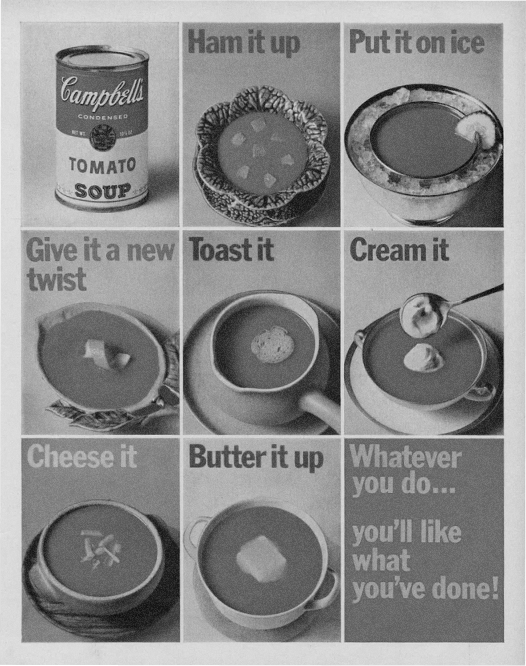

For the first ten years of my career, I worked for Massimo Vignelli, a designer who is legendary for using a very limited number of typefaces. Between 1980 and 1990, most of my projects were set in five fonts: Helvetica (naturally), Futura, Garamond No. 3, Century Expanded, and, of course, Bodoni.
For Massimo, this was an ideological choice, ethical imperative. "In the new computer age," he once wrote, "the proliferation of typefaces and type manipulations represents a new level of visual pollution threatening our culture. Out of thousands of typefaces, all we need are a few basic ones, and trash the rest."
Liberated from monogamy, I became typographically promis-cuous. I have since, I think, learned to modulate my behavior. Like any substance abuser, I have learned that binges are time-consuming, costly, and ultimately counterproductive but I've never gone back to five-typeface sobriety. Those thousands of typefaces are still out there, but my recovery has required that I become more discriminating and come up with some answers to this seemingly simple question: why choose a particular typeface?
"You've become a real slut, haven't you?"
It was true
For me, it became a time-saving device. Why spend hours choosing between Bembo, Sabon and Garamond No. 3 every time you needed a Venetian Roman? For most people — my mom, for instance — these were distinctions without differences. Why not just commit to Garamond No. 3 and never think about it again? My Catholic school education must have well prepared me for this kind of moral clarity. I accepted it gratefully.
Then, after a decade, I left my first job. Suddenly I could use any typeface I wanted, and I went nuts. On one of my first projects, I used 37 different fonts on 16 pages. My wife, who had attended Catholic school herself, found this all too familiar. She remembered classmates who had switched to public school after eight years under the nuns: freed at last from demure plaid uniforms, they wore the shortest skirts they could find. "Jesus," she said, looking at one of my multiple font demolition derbies.
R. I
Because It Works
Some typefaces are just perfect for certain things. I've specified exotic fonts for identity programs that work beautifully in head-lines and even in text, but sooner or later you have to set that really tiny type at the bottom of the business reply card. This is what Franklin Gothic is for. Careful, though: some typefaces work too well. Frutiger has been used so much for signage pro-grams in hospitals and airports that seeing it now makes me feel that I'm about to get diagnosed with a brain tumor or miss the 7:00 to O'Hare.

R. II
BECAUSE YOU LIKE ITS HISTORY

I've heard of several projects where the designer found a font that was created the same year the client's organization was founded. This must give the recommendation an aura of mani-fest destiny that is positively irresistible. I haven't had that luck yet, but still try to find the same kind of evocative alignment.
For instance, I was never a fan of Aldo Novarese's Eurostyle,
but I came to love it while working on a monograph on Eero Saarinen: they both share an expressiveness peculiar to the postwar optimism of the 1950's.
BECAUSE YOU LIKE ITS HISTORY
BECAUSE YOU LIKE ITS HISTORY
BECAUSE YOU LIKE ITS HISTORY
BECAUSE YOU LIKE ITS HISTORY
BECAUSE YOU LIKE ITS HISTORY
R. III
BECAUSE YOU LIKE ITS NAME
Once I saw a project in a student portfolio that undertook the dubious challenge of redesigning the Tiffany's identity. I par-ticularly disliked the font that was used, and I politely asked what it was. "Oh," came the enthusiastic response, "that's the best part! It's called Tiffany!" On the other hand, Bruce Mau designed Spectacle, the book he created with David Rockwell, using the typeface Rockwell. I thought this was funny.
R. IV
BECAUSE OF WHO DESIGNED IT
Once I was working on a project where the client group inclu-ded some very strong-minded architects. I picked Cheltenham, an idiosyncratic typeface that was not only well-suited to the project's requirements, but was one of the few I know that was designed by an architect, Goodhue. Recently, I designed a pu-blications program for a girls' school. I used a typeface that was designed by a woman and named after another, Zuzana Licko's Mrs. Eaves. In both cases, my clients knew that the public would be completely unaware of the story behind the font selection, but took some comfort in it nonetheless. I did too.
R. V
BECAUSE IT WAS THERE
Sometimes a typeface is already living on the premises when you show up, and it just seems mean to evict it. "We use Baskerville and Univers 65 on all our materials, but feel free to make an alternate suggestion." Really? Why bother? It's like one of those shows where the amateur chef is given a turnip, a bag of flour, a leg of lamb and some maple syrup and told to make a dish out
of it. Sometimes it's something you've never used before, which makes it even more fun.
R. VI
BECAUSE THEY MADE YOU
And sometimes it's something you've never used before, for good reason. "We use ITC Eras on all our materials." "Can I make an alternate suggestion?" "No." This is when blind embossing comes in handy.
R. VII
BECAUSE IT REMINDS YOU OF SOMETHING
Whenever I want to make words look straightforward, con-versational, and smart, I frequently consider Futura, upper and lower case. Why? Not because Paul Renner was straightforward, conversational, and smart, although he might have been. No, it's because 45 years ago, Helmut Krone decided to use Futura in Doyle Dane Bernbach's advertising for Volkswagen, and they still use it today. One warning, however: what reminds you of something may remind someone else of something else.
R. VIII
BECAUSE IT’S BEAUTIFUL
Cyrus Highsmith's Novia is now commercially available. He originally designed it for Martha Stewart Weddings headlines. Resistance is futile, at least mine is.
About 10 years ago, I was asked to redesign the logo for New York magazine. Milton Glaser had based the logo on Bookman Swash Italic, a typeface I found unimaginably dated and ugly. But Glaser's logo had replaced an earlier one by Peter Palazzo that was based on Caslon Italic. I proposed we return to Caslon and distinctly remember saying, "Bookman Swash Italic is al-ways going to look ugly." The other day, I saw something in the office that really caught my eye. It was set in Bookman Swash Italic, and it looked great.
R. IX
BECAUSE IT's uggly
Ugly, but great.
Ugly, but great.
Ugly, but great.
Ugly, but great.
Ugly, but great.
Ugly, but great.
Ugly, but great.
Ugly, but great.
Ugly, but great.
Whenever I want to make words look straightforward, con-versational, and smart, I frequently consider Futura, upper and lower case. Why? Not because Paul Renner was straightforward, conversational, and smart, although he might have been. No, it's because 45 years ago, Helmut Krone decided to use Futura in Doyle Dane Bernbach's advertising for Volkswagen, and they still use it today. One warning, however: what reminds you of something may remind someone else of something else.
R. X
BECAUSE IT’S BORING
R. XI
BECAUSE IT’S SPECIAL
In design as in fashion, nothing beats bespoke tailoring. I've commissioned custom typefaces from Jonathan Hoefler and Tobias Frere-Jones and Joe Finocchiaro, and we're currently working with Matthew Carter and Chester. It is the ultimate indulgence, but well worth the extra effort.
Is this proliferation? I say bring it on.
R. XII
BECAUSE YOU BELIEVE IN IT
Sometimes I think that Massimo Vignelli may be using too many typefaces, not too few. A true fundamentalist requires a monotheistic worldview: one world, one typeface. The designers at Experimental Jetset have made the case for Helvetica. My partner Abbott Miller had a period of life he calls "The Scala Years" when he used that typeface almost exclusively. When the time is right, I might make that kind of commitment myself.
R. XIII
BECAUSE YOU CAN’T NOT
Princeton Architectural Press is about to publish a collection of essays I've written, many of which first appeared here on Design Observer. I wanted it to feel like a real book for readers — it has no pictures — so I asked Abbott to design it. He suggested we set each one of the 79 pieces in a different typeface. I loved this idea, but wasn't sure how far he'd want to go with it. "What about the one called 'I Hate ITC Garamond?'" I asked him. "Would we set it in ITC Garamond?" He looked at me as if I was crazy. "Of course," he said.
The book is beautiful, by the way, and not the least bit slutty.